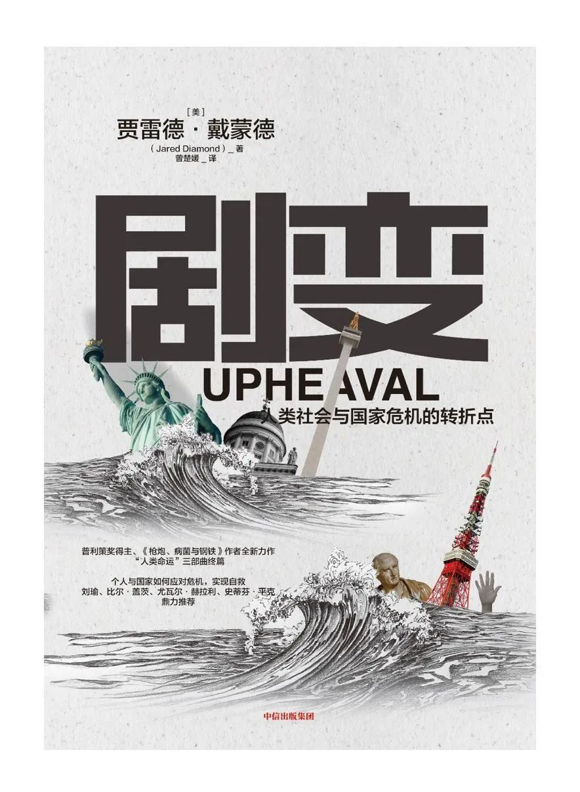

收录于合集
作者简介： 贾雷德·戴蒙德，全球知名博学家，演化生物学家、生物地理学家以及非小说类作家，加利福尼亚大学洛杉矶分校医学院生理学教授，美国艺术与科学院、国家科学院院士，美国哲学学会会员。戴蒙德曾以作品《枪炮、病菌与钢铁》荣获1998年普利策奖及英国科普图书奖，他的另一部代表作《第三种黑猩猩》也曾获英国科普图书奖。戴蒙德是当代少数几位探究人类社会与文明的思想家之一，经常从历史视角审视人类不平等、文明演进等宏观议题。
译者简介： 曾楚媛，北京大学国际关系学院博士生，北京大学国际战略研究院研究助理。美国加州大学圣迭戈分校(UCSD)取得比较政治学学士学位，伦敦政治经济学院(LSE)取得比较政治学硕士学位。主要研究方向为国际政治经济学、制度经济学、产业竞争力，目前还承担《国际战略评论》 部分编务工作。

赠书简介
当危机接踵而至，我们应该如何应对？普利策奖得主、《枪炮、病菌与钢铁》作者贾雷德·戴蒙德再一次回归历史，尝试解答危机应对这一关乎人类未来的重要命题，并谏言国家、企业及整个人类社会如何从个人应对危机的进化逻辑和生理变化中得到启示，以更加多维度的、宽视角地看待危机应对这一关乎人类未来的命题。
对个人而言，危机可以改变一个人的成长轨迹，如处理不当，终其一生会生活在负面情绪中。对整个人类社会而言，危机可使一种文明没落，使一个国家解体，使一个时代终结。但在戴蒙德看来，二者并无差异，国家甚至可以借鉴个人化解危机的逻辑框架以实现自救。就此，戴蒙德再一次跳脱了自然科学与社会科学互设的知识壁垒，重建自然状态与文明秩序相融的历史叙事线索，巡礼芬兰、日本、智利等7个国家的危机应对历史。他以一位社会观察者的自谦视角，从社会学、心理学、政治学、经济学、进化生物学等多学科出发，给出了“危机应对12个步骤”：直面危机，主动承担责任，明确问题的边界，寻求帮助，借鉴榜样，自我力量/国家认同，自我评估，应对危机的过往经验，耐心，自身灵活性 ，核心价值观，个人约束条件/国家地缘约束。
正如丘吉尔所言：“永远不要浪费一场好危机。”危机与剧变总是结伴而行。戴蒙德的危机应对方案或许可以帮助人类重塑危机意识，毕竟在瞬息万变的时代，个人、企业、国家乃至整个人类社会都要不断进行选择性变革。你，准备好了吗？
目录
文前
关于作者
序言 椰林俱乐部大火的遗烬
第一部分 个人危机
第1章 个人危机
第二部分 国家危机
第2章 苏芬之战
第3章 近代日本的起源
第4章 全民的智利
第5章 印度尼西亚，年轻国家的崛起
第6章 重建德意志
第7章 澳大利亚：我们是谁
第三部分 国家与世界：酝酿中的危机
第8章 日本：前路何方
第9章 美国的未来 ——优势与最大的难题
第10章 美国的未来 ——“其他”三个问题
第11章 世界将去往何处
结语 借鉴、思考与展望
致谢
图片来源
拓展阅读
赠书摘编
我们可以从历史中学到什么？
这是一个很宽泛的问题，那么我们先来看一个相对具体的问题：从《剧变》探讨的7个应对国家危机的案例中，我们能学到什么？虚无主义式的回答是：什么都学不到！许多历史学家曾说过，由于历史发展的进程过于纷繁复杂，结果受到太多不可控的变量和无法预见的变化影响，我们无法从历史中窥见一丝一毫的真谛。在1944年6月，谁能准确地预测战后东欧的地图呢？1944年7月20日，苏联军队还未跨越德国边境，如果那天那个名叫克劳斯·冯·施陶芬贝格的刺客把装有定时炸弹的皮箱放得离希特勒再近20 英寸，如果那天希特勒不只是受伤而是被炸死，那么德国后来的局势将会完全不同。而现实情况是，希特勒在1945 年4 月30 日自杀身亡，那时候苏联军队已经将柏林、整个东欧和德国东部纳入麾下。
没错，历史确实很难被预测。尽管如此，我们还是能够从中吸取两方面教训。不过，作为背景，让我们首先来看看，通过了解个人生活，我们能够吸取哪些教训，因为国家历史和个人生活（再一次）存在相似性。
如果可以的话，我们能从个人的生平和传记中学到什么呢？
个人就如同国家一样复杂，一样存在个体差异性，一样会受到不可预见的事情影响，因此要预测一个人的行为并不是一件轻松的事，更不用说通过一个人的行为去推断另一个人的行为了，难道不是这样吗？当然不是！虽然存在种种困难，但大多数人依然会发现，根据我们对身边人以往日常生活的了解，多花心思去预测他们未来可能出现的行为举止，是一件有利的事情。此外，心理学家通过专业训练，我们外行人通过“人际交往技能”，可以对我们认识的人的经历进行归纳，从而预测我们遇到的陌生人会做出何种行为。这就是为什么阅读一些人物传记很有指导意义，即使我们在现实生活中没有机会遇到他们，因为这样可以丰富我们了解人类行为的数据库。
那么，从人类历史中我们可以得到哪些相应的教训呢？
其中一类教训比较具体，是在理解一个国家的历史的基础上，读懂该国将来可能出现的行为。例如，芬兰是一个与俄罗斯为邻的小型民主国家，它很努力地与俄罗斯维持良好的双边关系，它有一支训练有素的军队，而且不依赖别的国家为其提供保护。我们可以从芬兰的近代历史中找到它实行这些政策的原因。那些对芬兰历史知之甚少的人就不太可能理解芬兰当前实施这些政策并且将来还会继续实施这些政策的原因——就像1959年首次去芬兰的我，因为不了解芬兰的历史，曾询问在芬兰的房东，为什么明明有美国作为背后的支撑，芬兰却不站起来与苏联对抗。
另一类教训则体现为更为概括性的主题。我再次以芬兰和俄罗斯为例。鉴于芬兰和俄罗斯的特征，二者的双边关系展现了一个概括性的主题：面对身边咄咄逼人的大国，小国的头上仿佛时刻悬着一把刀。面对这种危险，没有万能的解决方案。古希腊历史学家修昔底德在公元前5世纪编著的《伯罗奔尼撒战争史》第五卷中有一些被广为引用且扣人心弦的文字，便是以此为主题的。修昔底德描述了古希腊小岛米洛斯的市民如何应对来自强大的雅典帝国的施压。在一段如今被称为“米洛斯对话”的文字中，修昔底德重现了米洛斯人和雅典人之间紧张万分的谈判：米洛斯人试图劝服雅典人不要使用武力，力争保留其民众的自由和生命，而雅典人则警告米洛斯人要面对现实。接着，修昔底德简要阐述了这场谈判的结果：米洛斯人拒绝了雅典人提出的要求，正如2000年后芬兰在一开始拒绝了苏联的要求；雅典人对米洛斯人发起围攻，米洛斯人成功地抵抗了一段时间，但后来他们不得不投降；最终，雅典人杀光了米洛斯的男性公民，奴役了全部的妇女和儿童。
当然，芬兰人最后没有被俄罗斯人屠杀或奴役，这体现了在不同情况下，米洛斯困境的结局和最佳策略存在巨大差别。尽管如此，我们依然可以从中得到一个通用的教训：受大国威胁的小国应时刻保持警惕，做多手准备，制订多个应对方案，并且实事求是地评估这些方案。虽然这个教训我们都懂，甚至觉得已经不值一提，但不幸的是它常常被忽略。米洛斯人忽略了这个教训；巴拉圭人也忽略了这个教训，1865—1870年，巴拉圭人对实力远超自己的巴西、阿根廷和乌拉圭三国同盟发起战争，结果牺牲了巴拉圭60%的人口；1939年的芬兰忽略了这个教训；1941年的日本也忽略了这个教训，当时的日本同时对美国、英国、荷兰、澳大利亚和中国发起进攻，并且与苏联关系紧张；近期的乌克兰也忽略了这个教训，因此才会与俄罗斯展开灾难性的对抗。
假如现在我已经说服了你，使你相信我们可以从历史中学到一些有用的东西，那么从《剧变》中讨论的国家危机历史中，我们具体可以学到什么？我们可以从中学到一些概括性的主题。其中一个主题就是这7个国家为解决危机所做出的行为，这些行为包括：承认国家陷入危机；主动承担责任，做出改变，而不是推卸责任，以受害者自居；划清界限，确认需要改变的国家特征，而不是盲目地认为自己的国家一无是处；向其他国家寻求帮助；了解其他国家在面临与自己相似的问题时曾采用的成功解决问题的模型；保持耐心，理解失败乃成功之母，多尝试不同的解决方案；思考国家核心价值观中哪些部分依然适用，哪些部分已经过时；践行诚实的自我评估。
另一个概括性的主题是国家认同。新成立的国家，例如印度尼西亚、博茨瓦纳和卢旺达，需要建构起自己的国家认同，它们也确实正在为之努力。历史较为悠久的国家则可能需要调整自己的国家认同和核心价值观，一个典型的例子是澳大利亚，它重塑了自己的国家认同。
还有一个主题是关于影响危机结果的不可控因素。一个国家往往受制于自己之前应对危机的实际经验，还有它所面临的地缘政治约束。国家应对危机的实际经验无法突然增加，其面临的地缘政治约束也无法在一夜之间消除。但是，国家还是可以实事求是地考虑这些因素，正如俾斯麦和维利·勃兰特治下的德国那样。
悲观主义人士可能会对这些建议提出抗议：“这显然太荒谬了！我们不需要靠贾雷德·戴蒙德的书来告诉我们要进行诚实的自我评估，要借鉴其他国家的经验，要避免受害者心态，等等！”不，我们确实需要一本书来提醒自己，因为无可否认，这些看似“理所当然”的要求在过去经常被忽略，而且在今天依然如此。在过去，有些人因为忽略这些“理所当然”的要求而付出了生命的代价，其中包括米洛斯的全体男性公民，数十万巴拉圭人和数百万日本人。
悲观主义人士可能还会说：“是的，我们确实常常忽略这些理所当然的事情，但不幸的是，一本书改变不了我们的这种盲目。修昔底德描绘的‘米洛斯对话’已经存在了超过2000年，但国家依然在重蹈覆辙。即使再来一本书又能如何？”
我们这些作家之所以依然在朝着这个方向继续努力，是因为看到了一些令人振奋的因素。比起历史上的任何阶段，当前世界受过教育的人更多，我们对世界历史的认识更深刻，因此我们可以提出比修昔底德论据更为充分的论点。当前世界上民主国家的数量比以往任何时候都多，这意味着有更多的国民拥有表达自己的政治意愿的权利。虽然我们不乏无知的领导者，但也有一些国家领导者博览群书，他们比过去更容易从历史中吸取教训。令我感到惊喜的是，我曾遇到过一些国家元首和许多政界人士，他们告诉我，他们曾受到我之前写的书影响。当前，整个世界都正面临着全球性问题，但在过去的一个世纪中，尤其是最近几十年以来，我们的世界正着手建立处理全球性问题的机制。
以上便是我不听信悲观的言论、不愿放弃希望的一些原因。我将继续书写历史，以期当我们想要借鉴历史时能够有据所依。我们尤其要意识到，尽管各个国家在过去经常面临危机，而且时至今日依然如此，但现代国家和现代世界在面临危机时，无须再像过去那样在一片漆黑中摸索前进。了解以往国家应对危机的成功或失败的经验，便可为当下的我们点亮一盏指路明灯。
划重点：赠书
6月21日23:59 之前留言您对贾雷德·戴蒙德及其研究领域或者其他著作、政文观止Poliview或者政治学（包括国际/比较政治经济学）的想法或者建议 （不少于100字） ，我们将本着 公平公正 的原则抽出 3 位幸运读者寄送赠书 （限中国大陆地区） 。我们真挚地希望被抽中的幸运读者能在读完这本书后写下书评发给我们，共同交流，汇总成文。
没有抽中的读者朋友也请勿伤心抑或担心，本书在当当、淘宝、京东等各大平台均有销售。
今后政文观止Poliview还将继续举办赠书活动，欢迎继续关注、支持我们。
编辑：康张城